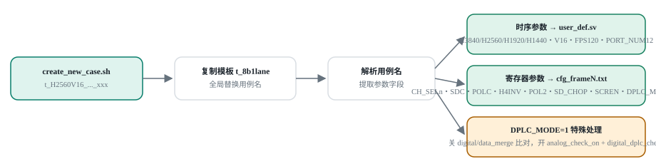

350Excel 唯一计划 case
163Excel case 已匹配源码
163计划与源码精确关联
20匹配且 case_list 启用
Case browser
验证计划 testcase
名称采用去空格、忽略大小写的精确匹配，不使用模糊包含关系。
350 / 350 条计划记录
Source audit
Excel case 对应源码
仅列出 Excel 主清单中存在且已匹配源码的 testcase，不展示计划外目录。
Legacy asset
原有 testcase 创建流程图
